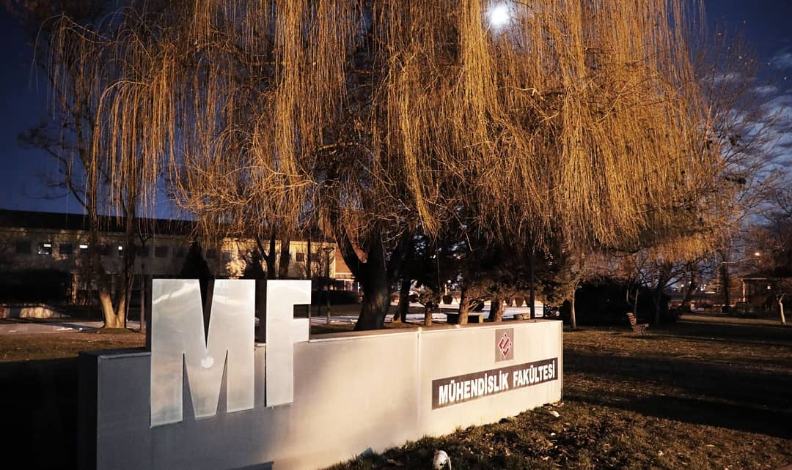

About Eskişehir Technical University
Eskişehir Technical University (ESTU) is one of the leading technical universities in Türkiye. The university focuses on engineering, aviation, transportation and science education. ESTU aims to educate innovative, responsible and globally competitive students.
University in Numbers
- Students: 15,000+
- Academic Staff: 900+
- Faculties: 5
- Research Centers: 20+
- International Partnerships: 100+

Administrative Units
- Rectorate
- Student Affairs Office
- International Relations Office
- Library and Documentation Department
- Information Technologies Department
More About ESTU
Eskişehir Technical University is known for its strong academic staff, modern laboratories and international research collaborations. The university provides high quality education in aviation, engineering and science fields while supporting innovation and technological development.